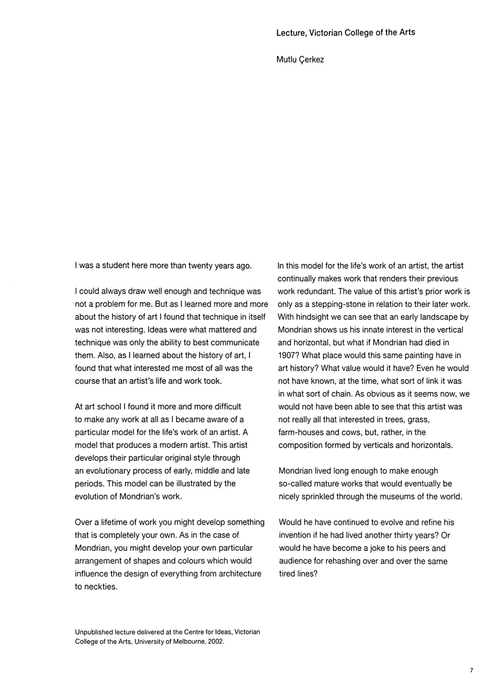
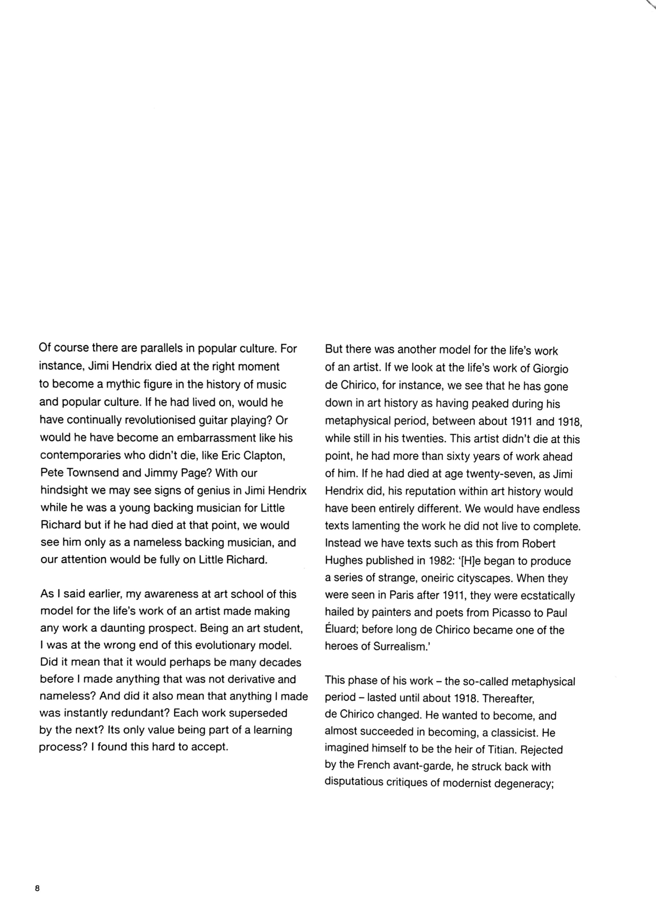
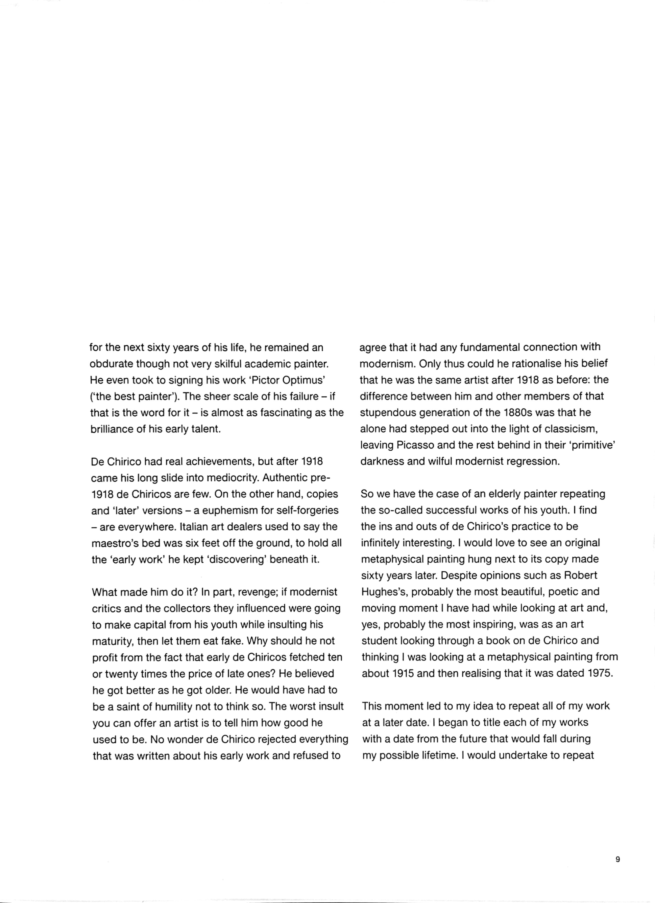
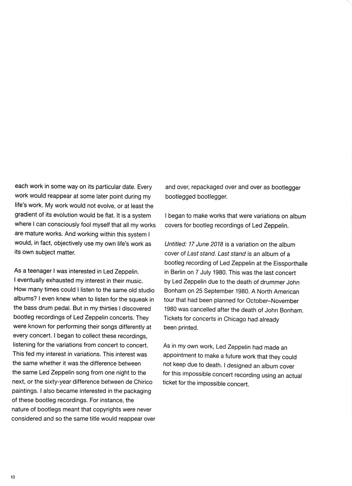
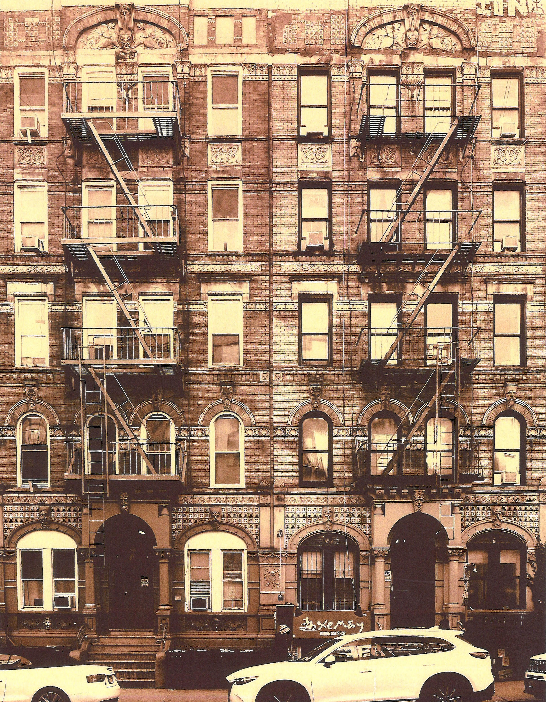

Missing Observer Studies is a time focused online cinema/journal/diary dedicated to the elongation, suspension, and untimeliness of time. Each issue is treated with care, and published indeterminately per the means and welfare of all parties involved.
huner.francis@gmail.com
ig: @huner_francis
©2020-2021
THE FOLLOWING IS A PRESENTATION OF NOTES FOR A LECTURE FROM MUTLU ÇERKEZ ACCOMPANIED BY AN ORIGINAL ESSAY “HERE NO ONE SPEAKS, THE DATES SEEM TO TELL THEMSELVES” BY CHARLES STOBBS III.
(From: March 12th, 2021)
Mutlu Çerkez/ Charles Stobbs III
This lecture has been reproduced w/ kind permission from Mat Cerkez. This version of the text has been scanned from Mutlu Çerkez: 1988-2065, published by the Monash Museum of Modern Art.




Here No One Speaks, The Dates Seem to Tell Themselves
by Charles Stobbs III
En Dash
1. Conventionally, the en dash is a tool of simple linguistic substitution employed when referring to an amount, value, implied relationship, or most commonly, a given range of time. In application, the words 'to', 'through', and 'and', are replaced by the dash.1 So too may the dash become substitute for a hyphen in a compound adjective.2 Here as in the former, the dash binds that which is situated on either end of its horizontal line. Eliminating any conceivable space between language and symbol, its polarity magnetizes that which it comes in contact with. Once situated, the dash is closed, the range and relationship are bound, and the phrase is locked down
Placed within a text, a singular gesture is proposed - that of the movement from left to right. In the placement of such a line, language has been jettisoned and the transference of information has sped up in conjunction with the movement of ones eye through the symbolic shorthand. Thus removing from the readers field of vision the propensity to read3, and with it any alterity to the movement of the text. In the manner that a jockey places blinkers on the eyes of their horse to narrow its field of vision and to speed its movement within the track, so too is the dash applied.
Functioning as such, we may surmise that between the dash and the contemporary inclination towards the quickening of information and its dispersion, a kinship arises. Taken up and mimicked by a given institutional authority the dash in its conventional state has been called upon to propagate a historical narrative which bypasses the strain of orality - that which remains unfixed, infinitely malleable, and exposed to interpretation and dialogue, or that which lies beyond the demarcation of the racetrack - for the consolidated smoothness of progression.4
Employed as such, there exists an equivalence between the dash as a propagator of informational speed in order to eradicate narrative divergence through the reduction of language, and that of the artists narrative trajectory within the institution at large.
2. What is the minimum requirement for the constitution of narrative? That a clear introduction is provided and a conclusion is reached? That communication has occurred? That progress has been made? That a reader has moved from here to there?
The narreme is the basic unit of narrative measurement, but where the kilogram corresponds to a cylinder of platinum-iridium alloy, the narreme has no such unit of measurement, not even one which is steadily eroding.
Arts writing5 exists as a means of distribution for narrative and is that which fortifies the narremes records. Though its core units remain unstable, a limited set of materials have become standard for such writing. Most often formulated as press releases and website notation, the content within this genre of writing calls forth; biographical information of the artist and exhibiting institution (year of birth, address, contact information, dates of display, operating hours,etc.), titles, dimensions, captions, curators, CV's, universities, peers, professors, and statements for the production of narrative. Alongside this information we come in contact with that which links dates of production, exhibition, acquisition, and donation. Together these materials are archived and sifted through, thus segmenting careers, locations, genres, and movements in order to make palpable their value.
On a base level, art history seeks to produce for a given artist, a narrative chronology of their career which displays a definitive arc of progression. This being an arc strung together from one work and the next, the artist and those who they came in contact with, and most importantly, the institutions which they orbited, in order to construct a compelling image of sustained production, influence, and circulation. As with all images we should gaze upon the captured light of this arc not as objective record, but as fantasy, hallucination, desire, and wish. It is Irena Haiduk who cautions are viewing of such a dubious image,
“The image fixes history - it reads the same for most people, on some level requiring no elaborate narrative or explanation, a perfect and permanent citation - it always was, is, and will be. Only a master on the right side of history can produce this kind of image. (Even if he doesn't realize that's what he's doing, it is equally noxious).”6
Narrative, wielded as such behaves like the dash in its erection of institutional authority around images of progress and homogeneity. Gaps are closed, distortions are smoothed over, and an image of the highest possible fidelity is locked down. An artists life span from student-early career-late career-death, or from the influence of one historical period on the next, produces a linear narrative. One which is in a steady state of transference and progression. In the manner of a spore which upon the death of its host is released and embeds its DNA into that of a new body, the artists career progresses.
A line is followed and reenforced.
To practice is to learn
is to move forward
all is rendered as progression towards the current.
"In this model of the life work of an artist, the artist continually makes work that renders their previous work redundant. The value of the artists prior work is only as a stepping-stone in relation to their later work."7
3. Value in the dash's treatment of narrative is not obtained through critical investigation into the work or its expansion, but rather through the clarity in which its timeline is rendered. Risk has been eliminated within the narrative and the institution is reassured that the artists career is indeed one of formal, conceptual, and lived progress. In the consolidation of production and the reduction of potential movements into a linear track, the image is filled in and both the artist and the artwork become legitimated. Within this notion of art history which the dash becomes both the icon of and bedfellow to, linear chronology is fetishized. Success is forward momentum which the collector may view proof of with its posting on the wall and in the guide book.8
These are the narratives which I seek to refute. Those destined for spread sheets, portfolios, board rooms, applications, and vinyl wall labels. Narratives which mimic the dash in their reduction of variation in order to draw a parallel, and to align for frames, archives, and bound pages. For the sake of compacting an artists career, ironing out diversions, and rendering the work institutional knowable. The dash in its reduction of narrative potential and the structuring of time, serves the function of a hermetic seal, ordering works and closing potentials.
Within this narrative mode, publications are printed and shelved, the retrospective is packed and ready to travel, a coffin moves from one institution to the next, frozen and reconstituted with each trade of hands. The dash is brief and definitive, represented within its horizontal line is the quickest way between any two points. It saves space on the page by standing in for what is bypassed and rendered invisible. It does not account for recursion, elaboration or digression, it simply moves forward, eating up that which is placed in front of it, rendering information as linkage to that which falls on either side. Reflected in its uptake is the maintenance and preservation of an image of artistic progression constructed by dominate discourse.
An image behind UV glass determined to be preserved.
4. Narrative itself is not the problem here, it is the reduction of temporalability which is the aim of my antagonism. Arts writing is not that of the novel, its movement is not unidirectional9 and should not be rendered as such. Narratives are handled too cleanly here, the connection between reference and artwork, one date and the next, one year and another have been determined before the work has been made. In its conception it is poisoned by a fetishization of finality which leads to the termination of the works possible movement. Once cauterized the work and it's trajectory reveal a complete knowability which can be exercised by the historiographer. Exerted by the dash is an influence on the author to produce an end to a text, thus allowing the viewer to skip to this end, and through it, to know precisely how to consider its beginning.10
"Now more so than ever: the efficiency, quantity and immediacy of information and information-systems has placed art and the artistic gesture at risk of being identified, categorized, digested, cannabalised and made into information before it has a chance to begin being art. Curiosity is being castrated by information."11
"The work of art more and more is preceded by its explanation. It arrives too late, as a effect or illustration of its 'theory'."12
5. The dash, even in its conventional usage can be regarded as a time travel device, in that it provides the immediate movement between any selected dates with minimal consideration of that which is deemed irrelevant. It possesses the ability to wipe out the expanse between a given set of dates, to pass over them in silence in the manner that one may enter a wormhole in order to draw together two dates without the need of experiencing all which exists between or outside of their vertices.
Fittingly, science fiction cinema has long been pre-occupied with notions of the timeline. Hollywood has repeatedly attempted to travel to the past only to be blocked by the need to maintain the purity of its timeline,13 to evade past version of ones self as not to produce deadly feedback, to contest the uttering of information about the future which in its vocalization erases it, or to prevent the fragmentation and recombination of what is known.
The dash is a temporal narrative device. One which has heretofore been both restrained, and employed as a restraint on narrative potentials. Soon however, through its continued address and implementation by artists, it may soon free itself from the position it has thus far held. As it moves from institution to artist the dash morphs from the which consolidates to that which seeks to expand and re-organize a given timeline.
The dash must be opened up to proposed alternative models of history, not in order to negate the value of the dash but to liberate its potential narrative effects. Within the substitution of language for symbol there lurks a potential for rupture which a reformulation of the dash must seek to expand. Thus, allowing for its structural integrity - its grip on temporality - to fail, cave in on itself, and eventually disappear altogether.
6. The – strikes through, opens up, and draws in.14
The – exist's as a fault line, tectonic rift, and seismograph, bringing forth from its fragmentation the sequencing of the material which it comes in contact with, not as magnetic but as reverberations which dismantle linear progression.
The – values that which is broken in order to reveal fragmented timelines and expose variants not as secondary but as vital to the continuation of an artists history.
The – echo's Joseph Grigely's words;
"An exhibition is unstable by definition - unstable, incomplete, unconfined, and uncontrollable… As the global economy implodes and exhibition practices reinvent themselves to take into account radical shifts in our aesthetic economy, we can assure ourselves that we have not seen the end of this fragmentation."15
This is the possible power of the - and its eventual erasure.16 Unlike the conventional dash, this version is inconsistent and unstable. In its body there remains room for inversions, replicas, and temporal specters of the non-contemporary.17
Towards a reclamation of the en dash
"Historicism contents itself with establishing a causal connection between various movements in history. But no fact that is a cause is for that very reason historical. It became historical posthumously as it were, through events that may be separated from it by thousands of years. A historian who takes this as his point of departure stops telling the sequence of events like beads on a rosary. Instead, he grasps the constellation which his own era has formed with a definite earlier one. Thus he establishes a conception of the present as the 'time of now' which is shot through with the chips of messianic time."18
1. Conventionally, the annal is a historical mode in which events are arranged chronologically with minimal textual information if any at all, defining their correlation.19 Unlike a historical form which relies more heavily on the production of a complete narrative, these records do not attempt to animate an image of progress or resolution. Events within the annal are not categorized, re-arranged, or paired, but simply located in their given year, sharing between them the same narrative value. Beginning, middle, and end exist without a clear demarcation of their permitters, and no central subject, or thematic persists - instead the annal produces a depiction of time which encounters given events, moves through them, and eventually terminates.
The most minimal narratives are produced through the simple placement of years and the appendage of minor descriptions. Ones which exchange words for digits, and are often void of information outside of the affirmation of a year past or the prospect of one to come. Through the arrangement of years alone, gaps are opened up and narrative potentials persist.
"The presence of the blank years in the annalist's account permits us to perceive, by ways of contrast, the extent to which narrative strains to produce the effect of having filled in all the gaps, to put in image of continuity, coherency and meaning in place of fantasies of emptiness, need, and frustrated desire that inhabit our nightmares about the destructive powers of time."21
It is Çerkez's career which enforces the - orbit towards an alignment with the annal in its conception of historical narrative. Not for the sake of maintaining chronology but for the reconfiguration of an artist's career away from the dash's reduction of time and towards its potential to allow alternative models of narrative progression to seep through. Within Çerkez's body of work exists an articulation of history through the proposition of dates and reproductions which rip holes in homogeneous time. His dates remain antagonistic to the ease of archive, as works overlap, are copied, and left unfinished.
2. Çerkez's dilemma - that of possessing a pre-cognizance of the coming historical treatment of ones work - is one of temporal stress, enforced by arts writing's vampiric thirst for an artists career to present the progression of ones life work. Here progression enacts a gridlock upon the artist in a manner reminiscent of sci-fi cinema. Though the source of pain is not in the knowing of a future crime or geological disaster but that ones own work will become eaten up by the institution, organized, and eventually stripped of all instability and critical edge.
In the presented text, Çerkez speaks to the anxiety of speculating upon the narrativization of his career and its rendering of his work as redundant.
"At art school I found it more and more difficult to make any work at all as I became aware of a particular model that produces a modern artist. This artist develops their particular original style through an evolutionary process of early, middle, and late periods…
Being an art student, I was at the wrong end of this evolutionary model. Did it mean that it would perhaps be many decades before I made anything that was not derivative and nameless? And did it also mean that anything I made was instantly redundant? Each work superseded by the next? Its only value being part of a learning process? I found this hard to accept."
Developed while in college, Çerkez enacted a model for his life work which would refute the ease at which his predecessors' work had been reduced to the archive and their careers deflated to an institutionally authored narrative.
Proposed in his dating system is a direct address of the timeline itself, and through such address, it is reclaimed as a material aspect of his work. Each piece was titled with the date of its making, the date which the work would be reproduced, and beginning in 1987, the number of days which Çerkez would have been alive when the work was to be reproduced, thus stretching it in multiple directions. First the work is stretched in the direction of his birth, second it is stretched into the future, and finally it is located in the then present. The effects of such a system prevent the work settling down in the timeline.
The dates stand in for language, replacing the function of linguistic contextualization or description with a purely chronological one. Here there is a refusal of information23 and through the placement of years the artists career is constructed not as linear progression but as a hall of mirrors. These numerical spans refract off one another and warp a timeline of production. The figuration of such a timeline works against narrative histories which rely on the knowledge of subsequent events to read a careers importance and continuity.
The works in Çerkez's oeuvre resist the separation into greater and lesser works as they all exist as part of a single project of the artist's biography. As such we can view this timeline through the titles of the works - as one which folds towards a middle, mirroring dates both past and future, and in place of a beginning or ending, terminates in the years 1988-2065.
This however is not a perfect mirror, as the work does not exist comfortably between its original and its reproduction. As with the painter who in viewing themselves in a mirror struggles to map the left ear onto the right, Çerkez's reproductions don't quite match. They are enantiomorphs, which in their variation dispute progression and the satisfaction of a narrative arc. Both sides of the dash are occupied by Çerkez, thus collapsing the work into history and dislocating its timeline. The right ear now occupies the space of the left.
Copy is not the goal, it is instead variant and the opening of gaps which is at the front of Çerkez's production. His is not a material exercise of reproduction as much as it is a historiographic exercise. Like the annalist who was content with notating only the passing of the year, Çerkez was under no obligation to complete his proposed reproductions. The effect had already been felt with the placement of a date of intended production. History feels the strain of this information without the prize of the work. Progression within the artists timeline is refuted as the reproduction fails to arrive, and thus the object which in its title possesses both dates reverberates between the two, traveling back and forth without the possibility of narrative closure. Where art history is concerned with the production or narrative progress in its reproduction and propagation, Çerkez produces a movement which is that of a temporal echo, reverberating between past and future, occupying both but settling in neither. Within the proposed date system the work may be considered in Grigely's words unstable and incomplete.
Such an instability as at the center of the -.
3. It is in order to push against narrative restraints that the - must be implemented. Through its use, the - may tie a knot in the dash that delineates the units of a given career and slow down the movement of information through a displacement of order. This is not an effect to be cautious of, but one to actively pursue. Once tied, we may seek to reveal alternatives to the modes in which an artist can position their life work and partake in a temporal peregrination.
The - is a tool for time travel which allows for the replacement of trajectory with that of the echo.
The - is a shuttle and wormhole which produces oscillation between future and past.
The - eliminates the fetishization of progression, in order to allow undulations to become deviations.
The - destabilizes the grip of narrative progression on the artists career and opens the timeline to narratives which are duplicated and unfinished.
and finally we must not forget that,
The - is also what lacks presence. That which we hold to ourselves or pass along in private. As not to answer a question a parallel line is struck to the printed line of the form. Space is not empty but the communication of an answer is negated, hidden behind this line and contained within the -, a refusal.
He puts atop his head a hat, and only then remembers the existence of both the hat, and his head. He takes a step, and only as the heel strikes stone does he remember the floor. As it goes, it is only with the turn of the calendar that he notices the passing months.
My sincerest thank you to Anna Schwartz Gallery, Mat Cerkez, and Anthony Huberman for your assistance with this text, and to Micah Weber and Roseanne Johnson for your continued support of my work.
"There are too many loose ends - no plot in the offering; and this is frustrating, if not disturbing, to the modern readers story expectations as well as his desire for specific information."24

96 & 98 St Marks Pl, New York, NY 10009, served as the cover for Led Zeppelin's 1975 studio album Physical Graffiti as well as its bootleg Tangible Vandalism. In 1995 Çerkez rephotographed the buildings for the work Untitled: 10 June 2018. While in the early stages of this text I took a break from my desk, went on a walk, and made the above image of the building.
Charles Stobbs III is a part–time lecturer at the University of Washington.
Charleskleinstobbs@gmail.com
___________
Missing Observer Studies:
Micah Weber, Roseanne Johnson.
huner.francis@gmail.com
← Browse the Catalogue